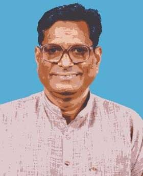
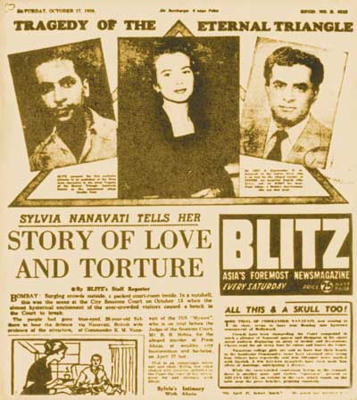
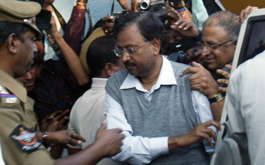
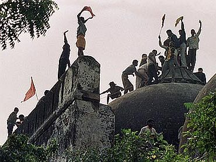
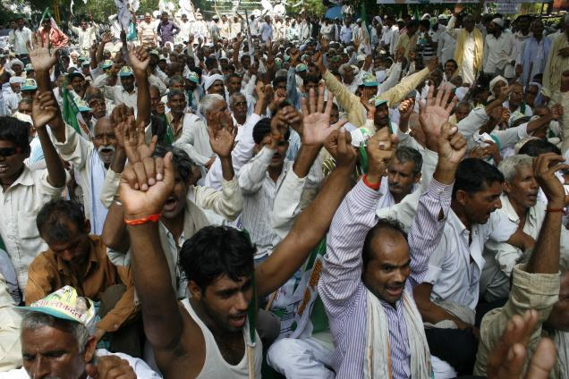
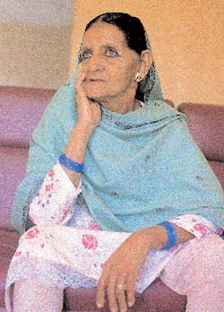
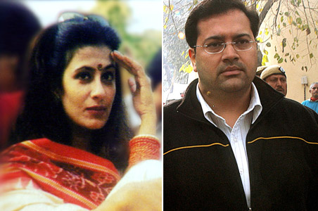
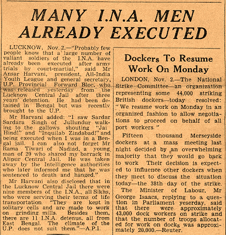
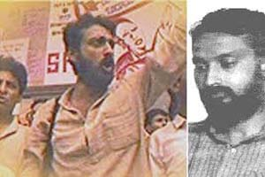

This scandal was placed at number 2 in Time magazine’s list of ‘Top 10 Abuses of Power’. The protectors of law themselves broke all the laws and gave an example of high level of corruption in India. This scandal got a worldwide attention. The government officials and some politicians illegally distributed Frequency Allocation Licences to mobile phone companies. These licences were being provided to create 2G consent for mobile phones. Though government claimed that the licences were granted on ‘first come first serve basis’ and that ‘zero loss’ was caused during the distribution process, yet CBI filed a charge sheet in April, 2011 mentioning that these fraud deals clinched the loss of INR 309845.5 Million. All the guesses of loss or profit were put to halt when the Supreme Court passed judgment on 2nd February, 2012. The SC affirmed that the allotment of licences of spectrum was ‘unconstitutional and arbitrary’. The SC also nullified 122 licences distributed in 2008. A. Raja was the minister of communication and I.T. at that time and he is the prime accused in this scandal.

Lal Bihari Identity Case
This case highlighted corruption in the government offices of India, especially in Uttar Pradesh. Lal Bihari, a young farmer, was dead according to the government records. He came to know about his death when he approached a bank for loan approval. Furious Lal Bihari felt so helpless but he gathered all his strength to fight for his identity. He went to the court, added word ‘mritak’ to his name, abducted his cousin who illegally snatched his property, tried to enter parliament, appealed for granting widow’s pension to his wife, amassed nearly all people who were deceased according to government officials. His efforts did not turn out be vain. After 18 years of struggle, he was finally declared alive by the district magistrate of Azamgarh. Lal Bihari did not only get his identity back but he also won his land and property through his consistent efforts.

K.M. Nanavati versus Bombay High Court, 1959
This is merely a murder case and is also not among the ‘rarest of rare’ cases. Then why is it being included in this list of top 10 cases of India? Well, the reason is that this case has a huge historical significance. It was after this case that jury system of passing the verdict was abolished by the government. Nanavati, a naval commander was convicted for murder of his wife’s lover, Prem Ahuja. The case being high profile gathered a huge media and public attention. To everybody’s surprise, Nanavati received public and media support. After a few hearings in the court led by jury, Nanavati was freed and the jury found him ‘not guilty.’ He won the case by 8-1. Bombay High Court interfered in the decision and retried Nanavati in a bench trial. He was declared guilty for murder of Prem Ahuja and sentenced to life imprisonment. This case highlighted the fact that jury trials are often affected by societal beliefs and norms. Therefore, jury trials are no more in effect.

Satyam Scam
Scams in the corporate world are like a daily humdrum in this era. However, scam as malicious as Satyam scam is one of its kinds in a millennium. Every Indian shareholder and investor experienced a massive setback when Satyam’s fraud got unmasked. A leading IT company, Satyam Computer Services shattered every shareholder’s belief and serenity. On 7th January, 2009, Satyam’s chairman Ramalinga Raju resigned from his post, confessing that he manipulated accounts and cheated with the investors by falsifying Satyam’s accounts by US $1.47 Billion (approx. INR 14000 crores). Later, Tech Mahindra took over Satyam, revived it successfully and turned it into ‘Mahindra Satyam’. 25th June, 2013 was the day when the two companies merged.

This is one case that has strong political, historical and religious roots. Main issue revolves around a piece of land in Ayodhya, the birth place of Lord Rama. On 6th December, 1992, some violent Hindu activists demolished Babri Mosque which is thought to be located at the same place where Lord Rama was born and where a Ram Temple already existed. The act of destroying Mosque led to violent riots. Consequently, a case related to the entitlement of land was lodged in Allahabad court. The case got more and more controversial with time and the judgment came after 18 years. The judgment was totally unexpected and took care of religious sentiments of both communities. The court ruled that the 2.77 acres of land in Ayodhya be split up into 3 parts. One third of the land was registered to Hindu Mahasabha to build Ram temple, another one third to Sunni Waqf Board and the remaining one third be passed to Nirmohi Akhara (Hindu religious group).

Land Acquisition in Uttar Pradesh
Another case related to ugly politics. Uttar Pradesh government played dirty politics to bring about development in just ‘one section of society’. The government of U.P. secured agricultural lands from poor farmers of many villages of Greater Noida at cheap prices and showed them fake dreams of developing industrial area in which the farmers and their family members would work. However, this never happened. The purpose was ‘swapped’ and the land was passed to builders for building residential apartments. The Supreme Court in its several judgments made it clear that this was ‘shear fraud’ with the villagers. Land acquired for one purpose cannot be used for another purpose. U.P. government was ordered to increase compensation of the acquired land.

The Shah Bano Case
This case often used a benchmark by the court, is one of the most controversial cases of maintenance. Shah Bano, a 62 year old woman from Indore and mother of five, was divorced by her husband in 1978. Unable to provide even the basic necessities to her children, Shah Bano knocked the doors of court. The Supreme Court of India heard her plea and passed its judgment in the favour of Shah Bano, ruling that she should be given maintenance money every month. The SC called forth Section 125 of Code of Criminal Procedure, which appertains to all irrespective of caste, creed or religion. However, this judgment bought about a huge public dismal. The Muslim community opposed this decision, as it contradicted with the Muslim Sharia laws. In haste, the Congress government passed Muslim Women Act, 1986; which impoverished the Supreme Court’s decision and denied any kind of maintenance money or alimony to any Muslim woman after divorce. Sad but true! Bano lost to dirty politics.

Jessica Lal Murder Case
This high profile murder case occurred in the wee hours of 30th of April, 1999. A 34 year old, Delhi-based model, Jessica was shot dead just over a bottle of liquor. Jessica was working as a celebrity barmaid in a socialite party at a bar in Mehrauli, New Delhi. Approximately at 1:30 am, Manu Sharma, son of Venod Sharma, an influential leader of Congress party, approached Jessica and demanded for a bottle of liquor. Jessica sternly said no to their demand and reminded them of the rules of court of not selling liquor after 12:30 am. Arguments between Manu and Jessica continued for half an hour. During this time, Manu even offered a 1000 rupees note, which Jessica denied. Furious Manu took out his pistol and fired two shots consecutively. One shot hit the ceiling and another hit Jessica in head. This led to her instant death. After many consecutive hearings, Sharma was sentenced to life imprisonment on 20th of December, 2006.

INA Trials
Indian National Army was formed with the aim of acquiring independence to India with Japanese aid, in 1942. INA majorly constituted Indian prisoners of war, held by Japan. Formed and led by Subhash Chandra Bose, INA managed to shake the English. However, the agitation bought about by the INA couldn’t last for long. The British government made serious efforts to abandon this force and several top guns of INA were scrutinized by the British government on the charges of disobedience, revolt and sedition, etc. INA trials are widely known as Red Fort Trials, because the first court martial, was done in the Red Fort in Delhi in November 1945. All ten trials were held from November 1945 to May 1946. These trials are among the ‘rarest of rare cases’. And the reason is: during the time the trials were done, there was a widespread public outrage and the Tricolour of Congress waved in the sky with the Green flag of the Muslim League. Though the charges were of treason and conspiracy, but general masses of the British India supported these brave men and saw them as national heroes.

Chandrashekhar Prasad Murder Case
Prasad was seen as a youth icon when he started his career in politics with the Communist Part of India Liberation. He was the student leader of student union of Jawaharlal Nehru University. He was passionate to change the politics scenario in India. But Prasad was shot dead on 31st March, 1997, in Siwan district of Bihar, when he was addressing a rally held by his party. Three sharpshooters, employed by strong politicians, were convicted and sentenced to life imprisonment after 15-year-long case hearing.
The Supreme Court of India is the highest judicial forum and final court of appeal under the Constitution of India, the highest constitutional court, with the power of constitutional review. Consisting of the Chief Justice of India and 30 other judges, it has extensive powers in the form of original, appellate and advisory jurisdictions.